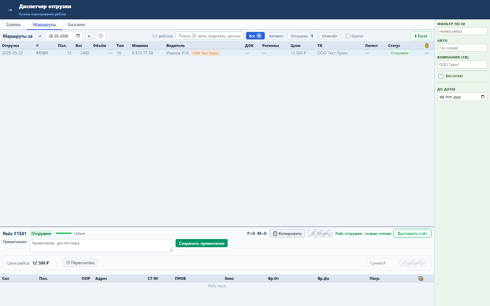
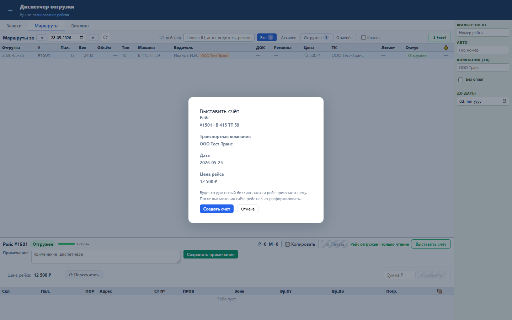
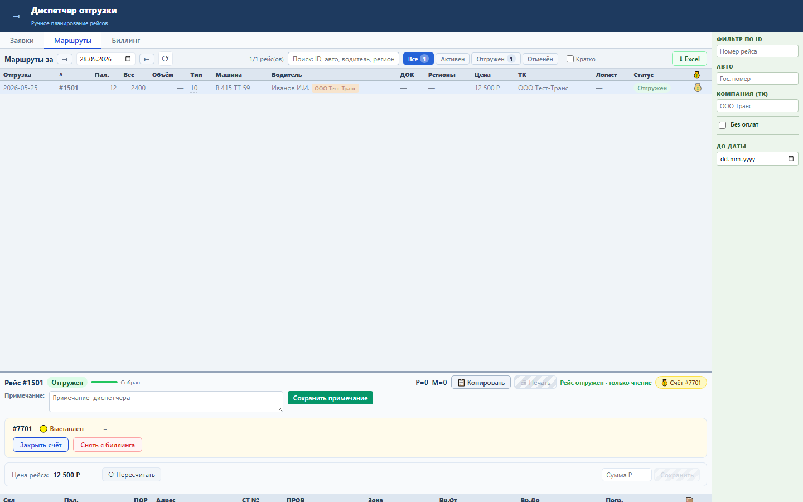

Зачем этот блок
Sprint 15 запускает биллинговый контур: отгруженный рейс превращается в счёт, а рейс после этого защищается от редактирования и расформирования.
Вход
Отгруженный рейс, транспортная компания, цена рейса.
Отгруженный рейс, транспортная компания, цена рейса.
Процесс
Открыть рейс, нажать «Выставить счёт», создать новый заказ или привязать к существующему.
Открыть рейс, нажать «Выставить счёт», создать новый заказ или привязать к существующему.
Результат
Рейс получает
Рейс получает
PAY_ORDER_ID и тег счёта.Структура данных
| Объект | Поля | Назначение |
|---|---|---|
| Рейс | ID, TK_NAME, PRICE, PAY_ORDER_ID | Источник строки счёта и связь с заказом. |
| Биллинг-заказ | order_id, company, date_from, date_to, total_price | Документ для транспортной компании. |
Как работать



Бизнес-процессы
- Подготовка: рейс закрыт, водитель внешний, цена рассчитана.
- Выставление: диспетчер создает биллинговый заказ или добавляет рейс в открытый счет ТК.
- Блокировка рейса: наличие
PAY_ORDER_IDзапрещает расформирование и изменение состава. - Контроль: рейс виден с тегом счета, дальше его ведет статусная машина биллинга.
Результат проверки
Sprint 15 закрыт функционально: backend tests 12 passed, UI smoke passed, load NFR passed. Проверены создание биллингового заказа, открытие счёта по рейсу, связь рейс-счёт и пользовательский диалог.